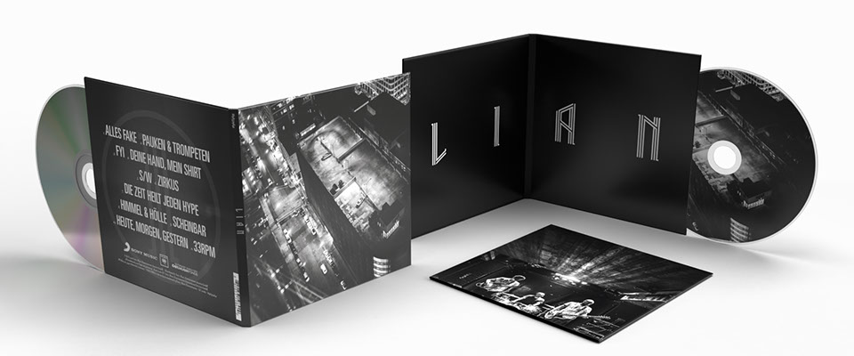
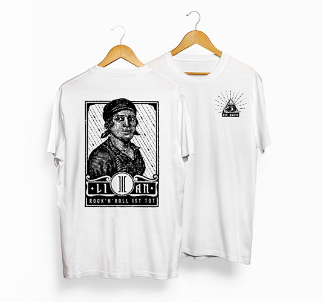

LIAN
Design und Musik sind untrennbar miteinander verbunden. Im Fall der 2013 gegründeten Rockband LIAN wurde der gesamte Aufritt von Anfang an mitgestaltet. Der Stil der Band: ehrliche Gitarrenmusik, ohne digitale Spielereien, im Studio live eingespielt. Diese analoge Komponente zieht sich wie ein schwarzweißer Faden durch die gesamte Gestaltung, vom Logodesign über Web- und Social Media Auftritt bis hin zu einem generellen Foto- und Videokonzept.
Das Logo und der daraus entwickelte Schriftzug, bestehen grundsätzlich aus drei Linien, welche für die Bandmitglieder und deren musikalische Einheit stehen. Wie bei der Musik von LIAN ist die Grundform geradlinig und konstruiert, aber dennoch detailverliebt und spielerisch leicht.


Für die Merchandiselinie wurden Anleihen an Punkrock-Plakaten der 70er Jahre genommen, die auch musikalisch einen starken Einfluss auf den Sound von LIAN hatten.
Herzstück für das Album- und Vinyldesign waren die Fotos des in der internationalen Musikszene etablierten Live-Photographen Matthias Heschl, der auch maßgeblich am visuellen Auftritt der Band beteiligt war. Schwarz/Weiß, viel Körnung und massenhaft Rock’n’Roll Attidüde.
Auch bei den Videos setzt sich das grafische Konzept fort, perfekt in Szene gesetzt durch Kameraführung und Schnitt von Koryphäe Roland Kluger.